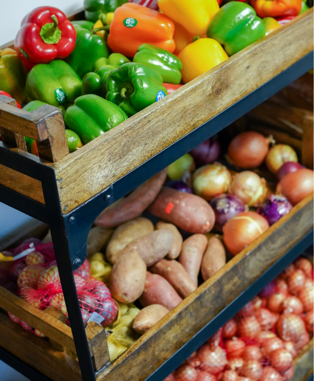
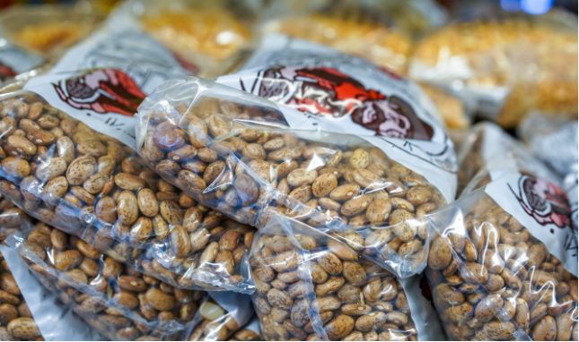
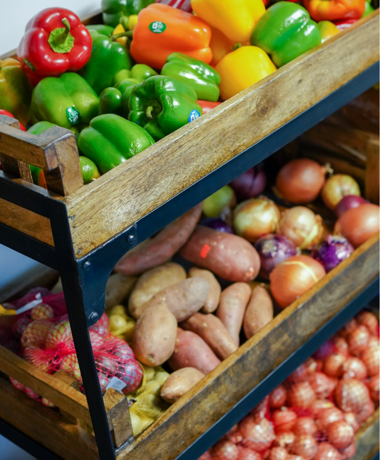
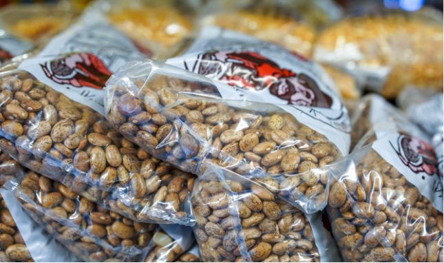
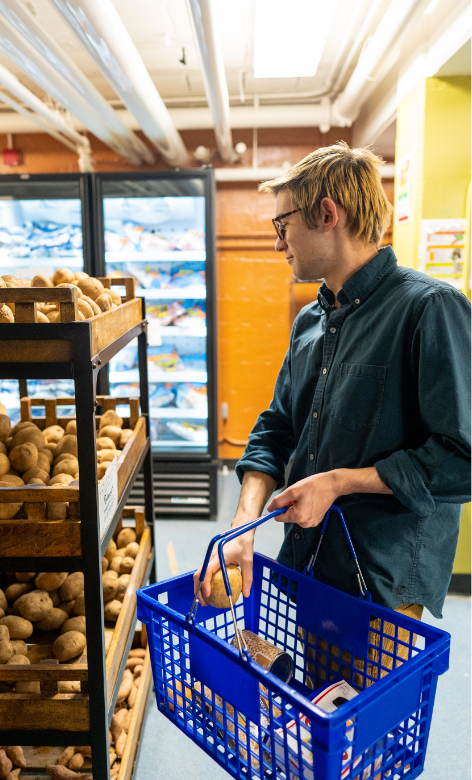
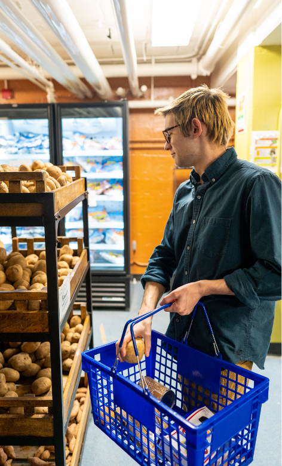
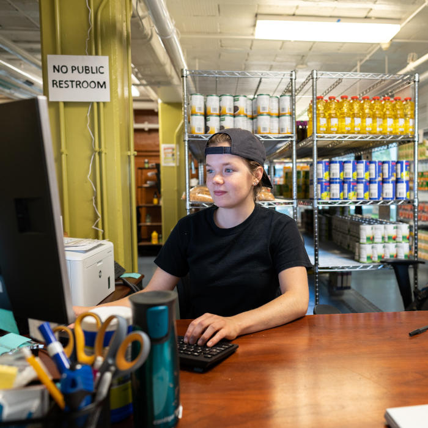
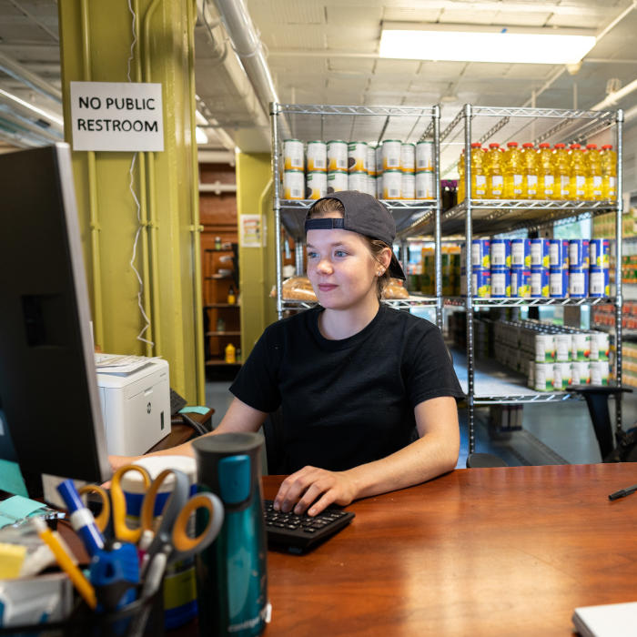

FOOD

Produce, dairy, meat, bread, frozen and shelf-stable foods (i.e. rice, cans, tuna, etc.)

To ensure members of the University of Michigan community—whether on a tight budget or physically restrained from getting to a grocery store—receive equitable access to healthy, nutritious, and nourishing food and the ability to prepare it for themselves or others.
Shopping at the Maize and Blue Cupboard is by appointment only. Please make an appointment by visiting our sign up page here here.
College students and staff are experiencing food insecurity at alarming rates. The Maize and Blue Cupboard is here to provide an immediate and comprehensive response for the U-M community. By offering resources, educational opportunities, compassionate support and more, we help students develop the skills to make informed decisions.
Read our FAQs to learn more about the Maize and Blue Cupboard and how you can get help.
Produce, dairy, meat, bread, frozen and shelf-stable foods (i.e. rice, cans, tuna, etc.)

Dishes, silverware, pots & pans, Tupperware, cutting boards, knives, and other kitchenware

Trash bags, toilet paper, cleaning supplies, hygiene products, school supplies, baby items and more

Get connected to campus experts like CAPS, Dean of Students and Financial Aid, as well as SNAP (Michigan’s food program)

U-M’s Maize & Blue Cupboard (MBC), the College of Engineering, Student Life, and Ann Arbor-based Food Gatherers will host North Campus mobile food distributions to make MBC resources more accessible for North Campus residents.

Students who live on North Campus have easier access to free groceries thanks to U-M’s Maize & Blue Cupboard (MBC), the College of Engineering, Student Life, and Ann Arbor-based Food Gatherers.

The U.S. Department of Agriculture offers a nationwide program to help people who are struggling with food insecurity. The national name for the program is Supplemental Nutrition Assistance Program (S

From modest beginnings, to a campus staple.
 





 

 


Located in the basement of the Betsy Barbour Residence Hall, please enter via the Maynard entrance only to ensure privacy for residents. Please contact us if you need ramp or elevator access.
Address: 420 S State St Ann Arbor, MI 48109
Phone: 734-936-2794
On Monday 10/30 the Maize and Blue Cupboard will transition to shopping by appointment only. Schedule your shopping appointment here.